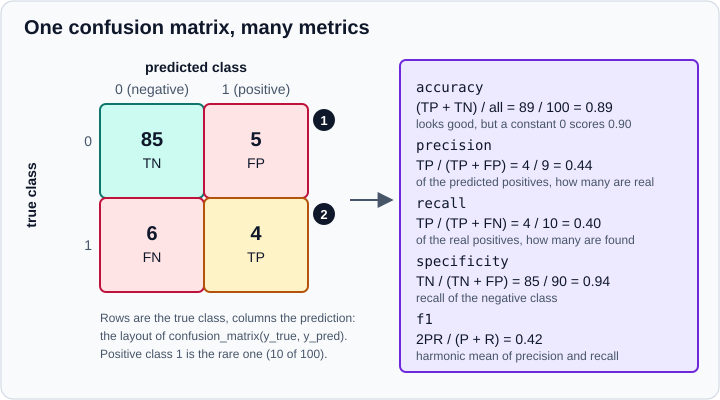

Metrics & Scoring
|
This content was generated with the assistance of AI and should be verified against the official documentation before being relied on in production. |
This page targets scikit-learn 1.9 (1.9.1 at the time of writing) with NumPy 2.5 and pandas 3.1, and every example was run on Python 3.13.18, NumPy 2.5.4, pandas 3.1.0 and scikit-learn 1.9.1 in October 2026. Examples target Python 3.13 or 3.14. It documents the sklearn.metrics module and the way the rest of the library asks it for numbers: the scoring parameter of cross-validation and search tools, scorer objects, and the metric functions themselves.
Choosing a metric is a modelling decision, not a formality, and the concepts behind it (why accuracy misleads on rare events, what a baseline is for, how to report uncertainty) are explained in Model Evaluation & Validation. This page is the scikit-learn reference that goes with it. Splitting and resampling are in Cross-Validation & Splitters, moving the decision threshold in Tuning the Decision Threshold, checking probabilities in Probability Calibration, and plotting curves in Display Objects.
Three ways scikit-learn scores a model
There are three separate APIs, and mixing them up is the source of most confusion.
| API | What it is | Typical use |
|---|---|---|
The estimator |
Every estimator has a default criterion: accuracy for classifiers and the coefficient of determination (R²) for regressors. |
A quick look: |
The |
A string or a callable (a scorer) that cross-validation and search tools call to rank candidates. A scorer always follows "higher is better". |
|
Metric functions in |
Plain functions taking |
Computing a number from predictions you already hold, and building custom scorers. |
A scorer is a metric function bound to a way of getting predictions from an estimator. The scorer decides whether to call predict, predict_proba or decision_function (its response_method), applies the sign so that bigger is always better, and forwards extra keyword arguments to the metric. Metric functions ending in _score return something to maximise. Functions ending in _error, _loss or _deviance return something to minimise, and that is why their named scorers carry a neg_ prefix.
Which scoring function should you use?
The user guide gives a short principle from statistical decision theory. Decide first what you want from the model, then use the scoring function that is consistent with it, both as the training loss where possible and as the evaluation metric.
-
If the score is given (a competition, a business contract), use it.
-
If you predict a single number, the target functional you want (the mean, the median, a quantile) determines the metric. The mean goes with squared error, the median with absolute error and a quantile with the pinball loss. Mismatching them (judging a median forecast with squared error) rewards the wrong behaviour.
-
If you predict probabilities, use a strictly proper scoring rule: log loss or the Brier score. These reward honest probabilities.
-
If a decision follows from the prediction (call, approve, alert), the decision is evaluated through the confusion matrix and the numbers derived from it, and the decision threshold is a parameter you can tune.
| Target functional | Strictly consistent scoring function | Use with |
|---|---|---|
Class probabilities (classification) |
Brier score, log loss |
|
The most likely class |
Zero-one loss (equivalent to accuracy for ranking models) |
|
Mean, any real target |
Squared error (R² ranks models the same way) |
|
Mean, counts or non-negative target |
Poisson deviance (Gamma deviance for strictly positive, Tweedie in general) |
|
Median |
Absolute error |
|
A quantile |
Pinball loss |
|
The user guide’s own illustration is a promise such as "no outage longer than a minute on 99% of days". The functional is the 99% quantile, so train a model with HistGradientBoostingRegressor(loss="quantile", quantile=0.99) and evaluate it with mean_pinball_loss(..., alpha=0.99) (the argument is called quantile in the estimator and alpha in the metric).
The scoring parameter
String names and the sign convention
Common metrics can be requested by name. None means the estimator’s own score method.
from sklearn.datasets import make_classification
from sklearn.linear_model import LogisticRegression
from sklearn.model_selection import cross_val_score, train_test_split
X, y = make_classification(n_samples=1000, weights=[0.9], flip_y=0.02, random_state=0)
X_tr, X_te, y_tr, y_te = train_test_split(X, y, stratify=y, random_state=0)
clf = LogisticRegression(max_iter=1000)
print(cross_val_score(clf, X_tr, y_tr, cv=5)) # None: accuracy
print(cross_val_score(clf, X_tr, y_tr, cv=5, scoring="roc_auc").round(3))
print(cross_val_score(clf, X_tr, y_tr, cv=5, scoring="neg_log_loss").round(3))Output:
[0.95333333 0.96 0.98 0.96666667 0.93333333] [0.907 0.964 0.969 0.995 0.899] [-0.17 -0.113 -0.098 -0.07 -0.201]
The log loss scores are negative because every scorer follows the convention that a larger value is better, so error-like metrics are negated: neg_log_loss of -0.07 means a log loss of 0.07, which is better than -0.20. When you report a number, flip the sign back. The same holds for neg_mean_squared_error, neg_root_mean_squared_error, neg_mean_absolute_error and neg_brier_score.
The names that exist depend on the version, and the library can list them for you.
from sklearn.metrics import get_scorer, get_scorer_names
names = get_scorer_names()
print(len(names))
print([n for n in names if n.startswith("neg_")])
print(get_scorer("neg_log_loss"))
print(get_scorer("r2"))Output:
58 ['neg_brier_score', 'neg_log_loss', 'neg_max_error', 'neg_mean_absolute_error', 'neg_mean_absolute_percentage_error', 'neg_mean_gamma_deviance', 'neg_mean_poisson_deviance', 'neg_mean_squared_error', 'neg_mean_squared_log_error', 'neg_median_absolute_error', 'neg_negative_likelihood_ratio', 'neg_root_mean_squared_error', 'neg_root_mean_squared_log_error'] make_scorer(log_loss, greater_is_better=False, response_method='predict_proba') make_scorer(r2_score, response_method='predict')
The main families, as of 1.9:
| Task | Scoring names |
|---|---|
Classification, label based |
|
Classification, score or probability based |
|
Regression |
|
Clustering |
|
A wrong name is not silently ignored: it raises InvalidParameterError and lists the valid values.
A failing scorer produces NaN, not an exception
One behaviour that surprises everyone once. Cross-validation tools catch errors raised while scoring, emit a UserWarning and record nan (their error_score parameter defaults to nan). Binary scorers such as f1, precision and recall assume the positive class is the integer 1, so string labels fail.
import warnings
import numpy as np
from sklearn.linear_model import LogisticRegression
from sklearn.metrics import f1_score, make_scorer
from sklearn.model_selection import cross_val_score
rng = np.random.default_rng(0)
X = rng.normal(size=(300, 4))
y = np.where(X[:, 0] + rng.normal(0, 1, 300) > 1, "churn", "stay")
clf = LogisticRegression()
with warnings.catch_warnings():
warnings.simplefilter("ignore")
print(cross_val_score(clf, X, y, cv=3, scoring="f1")) # NaN for every fold
try:
cross_val_score(clf, X, y, cv=3, scoring="f1", error_score="raise")
except ValueError as exc:
print("ValueError:", exc)
f1_churn = make_scorer(f1_score, pos_label="churn")
print(cross_val_score(clf, X, y, cv=3, scoring=f1_churn).round(3))Output:
[nan nan nan] ValueError: pos_label=1 is not a valid label: It should be one of ['churn' 'stay'] [0.522 0.524 0.605]
Pass error_score="raise" while developing so a misconfigured scorer fails loudly. The same happens for multiclass targets with plain f1: pick an average such as f1_macro.
Building scorers with make_scorer
Metrics that need extra parameters (fbeta_score needs beta, mean_pinball_loss needs alpha, mean_tweedie_deviance needs power) are not available as strings. Wrap them with make_scorer.
make_scorer(score_func, *, response_method=None, greater_is_better=True, **kwargs) takes:
-
greater_is_better: set toFalsefor a loss. The scorer then returns the negated value, so the "higher is better" convention holds. -
response_method: which estimator method feeds the metric:"predict","predict_proba","decision_function", or a list tried in order (["decision_function", "predict_proba"]for threshold-free metrics such as ROC AUC). -
any further keyword arguments, forwarded to the metric (
beta,alpha,pos_label,labels,averageand so on).
import numpy as np
from sklearn.datasets import make_classification, make_regression
from sklearn.dummy import DummyClassifier
from sklearn.ensemble import HistGradientBoostingRegressor
from sklearn.linear_model import LogisticRegression, Ridge
from sklearn.metrics import fbeta_score, make_scorer, mean_pinball_loss
from sklearn.model_selection import cross_val_score, train_test_split
Xc, yc = make_classification(n_samples=600, weights=[0.85], random_state=1)
f2 = make_scorer(fbeta_score, beta=2) # recall counts twice as much
print(cross_val_score(LogisticRegression(), Xc, yc, cv=5, scoring=f2).round(3))
X, y = make_regression(n_samples=300, n_features=5, noise=30, random_state=0)
pinball90 = make_scorer(mean_pinball_loss, alpha=0.9, greater_is_better=False)
q90 = HistGradientBoostingRegressor(loss="quantile", quantile=0.9, random_state=0)
print(cross_val_score(q90, X, y, cv=5, scoring=pinball90).round(2)) # negative: a loss
def worst_case_log_error(y_true, y_pred):
return float(np.log1p(np.abs(y_true - y_pred).max()))
scorer = make_scorer(worst_case_log_error, greater_is_better=False)
X_tr, X_te, y_tr, y_te = train_test_split(X, y, random_state=0)
print(scorer(Ridge().fit(X_tr, y_tr), X_te, y_te)) # already negatedOutput:
[0.375 0.655 0.699 0.511 0.707] [-10.5 -8.93 -9.6 -8.05 -11.52] -4.698411295783202
Source: scikit-learn: Callable scorers
Three details avoid wasted afternoons.
-
The old arguments
needs_proba=Trueandneeds_threshold=Truewere deprecated in 1.4 in favour ofresponse_method. They are no longer recognised:make_scorerforwards unknown keyword arguments to the metric, so the mistake shows up later as aTypeErrorfrom the metric function. -
With
n_jobsgreater than 1 the default joblib backend can pickle a function defined next to the call, but importing the scoring function from a module is the robust choice across backends. -
A scorer is a function of an estimator (
scorer(estimator, X, y)), unlike a metric (metric(y_true, y_pred)). Pass scorers toscoring, never bare metric functions.
Several metrics at once
cross_validate, GridSearchCV and RandomizedSearchCV accept a list of names, a dict of name to scorer, or a callable returning a dict.
from sklearn.datasets import make_classification
from sklearn.linear_model import LogisticRegression
from sklearn.metrics import fbeta_score, make_scorer
from sklearn.model_selection import GridSearchCV, cross_validate, train_test_split
X, y = make_classification(n_samples=2000, weights=[0.9], flip_y=0.03, random_state=0)
X_tr, X_te, y_tr, y_te = train_test_split(X, y, stratify=y, random_state=0)
clf = LogisticRegression(max_iter=1000)
res = cross_validate(clf, X_tr, y_tr, cv=5,
scoring=["accuracy", "balanced_accuracy", "f1", "average_precision"])
print(sorted(res))
print({k: float(v.mean().round(3)) for k, v in res.items() if k.startswith("test_")})
scoring = {"auc": "roc_auc", "f2": make_scorer(fbeta_score, beta=2), "bal": "balanced_accuracy"}
gs = GridSearchCV(LogisticRegression(max_iter=1000), {"C": [0.01, 1, 100]},
scoring=scoring, refit="auc", cv=5).fit(X_tr, y_tr)
print(gs.best_params_)
print(gs.cv_results_["mean_test_f2"].round(3))
print(sorted(k for k in gs.cv_results_ if k.startswith("rank_")))Output:
['fit_time', 'score_time', 'test_accuracy', 'test_average_precision', 'test_balanced_accuracy', 'test_f1']
{'test_accuracy': 0.986, 'test_balanced_accuracy': 0.941, 'test_f1': 0.932, 'test_average_precision': 0.919}
{'C': 100}
[0.581 0.902 0.907]
['rank_test_auc', 'rank_test_bal', 'rank_test_f2']
With several metrics a search must know which one chooses the final model: refit="auc" names it (or pass a callable that picks the best index). Without refit the best estimator is not refitted. cv_results_ then carries mean_test_<name>, rank_test_<name> and so on for each name. Evaluate everything you care about in one pass, but select with one metric, decided before looking at the results.
Classification metrics
The confusion matrix and what derives from it
For a binary problem confusion_matrix(y_true, y_pred) returns rows for the true class and columns for the prediction, so the order of .ravel() is tn, fp, fn, tp. Almost every label-based metric is arithmetic on those four counts.

In the figure, marker 1 is the false-positive cell (a negative predicted as positive) and marker 2 is the false-negative cell (a missed positive). Precision looks down the predicted-positive column, recall along the true-positive row. Accuracy is high because 90% of the cases are negative, and a model that always predicts 0 would score 0.90 while catching nothing.
import numpy as np
from sklearn.metrics import (accuracy_score, balanced_accuracy_score, class_likelihood_ratios,
cohen_kappa_score, confusion_matrix, f1_score, fbeta_score,
matthews_corrcoef, precision_score, recall_score)
y_true = np.array([0] * 90 + [1] * 10)
y_pred = np.array([0] * 85 + [1] * 5 + [0] * 6 + [1] * 4) # 85 TN, 5 FP, 6 FN, 4 TP
print(confusion_matrix(y_true, y_pred))
tn, fp, fn, tp = confusion_matrix(y_true, y_pred).ravel()
print(tn, fp, fn, tp)
print("accuracy", accuracy_score(y_true, y_pred))
print("balanced accuracy", round(balanced_accuracy_score(y_true, y_pred), 3))
print("precision", round(precision_score(y_true, y_pred), 3), "recall", recall_score(y_true, y_pred))
print("f1", round(f1_score(y_true, y_pred), 3), "f2", round(fbeta_score(y_true, y_pred, beta=2), 3))
print("mcc", round(matthews_corrcoef(y_true, y_pred), 3), "kappa", round(cohen_kappa_score(y_true, y_pred), 3))
print(class_likelihood_ratios(y_true, y_pred))Output:
[[85 5] [ 6 4]] 85 5 6 4 accuracy 0.89 balanced accuracy 0.672 precision 0.444 recall 0.4 f1 0.421 f2 0.408 mcc 0.361 kappa 0.36 (7.2, 0.6352941176470588)
Source: scikit-learn: Confusion matrix
-
accuracy_score is the fraction of correct predictions. It is fine for balanced classes with symmetric costs and misleading otherwise.
-
balanced_accuracy_score is the average of recall over the classes, so a constant predictor scores 0.5 whatever the imbalance (0.672 here against 0.89 accuracy).
-
precision_score, recall_score and f1_score concentrate on the positive class.
fbeta_scoreweights recallbetatimes as much as precision;beta=2favours recall,beta=0.5precision. -
matthews_corrcoef uses all four cells and stays informative under imbalance. It ranges from -1 to +1, with 0 meaning no better than chance. cohen_kappa_score measures agreement beyond chance and accepts
weights="linear"or"quadratic"for ordered labels; since 1.9 it hasreplace_undefined_byfor the case where the metric is undefined. -
class_likelihood_ratios returns the positive and negative likelihood ratios, the quantities used in diagnostic testing (LR+ of 7.2 means a positive prediction is 7.2 times more likely for a real positive than for a negative).
-
jaccard_score, hamming_loss and zero_one_loss are the set-overlap and error-rate views, mainly for multilabel problems.
Precision, recall and the zero_division parameter
When a class is never predicted, precision is 0/0. The metric returns a warning and 0 by default; zero_division chooses the value (0.0, 1.0 or "warn") and silences the warning when set explicitly.
from sklearn.metrics import classification_report, precision_score
print(precision_score([0, 0, 0], [0, 0, 0], zero_division=0.0),
precision_score([0, 0, 0], [0, 0, 0], zero_division=1.0))
y_true = [0] * 90 + [1] * 10
y_pred = [0] * 85 + [1] * 5 + [0] * 6 + [1] * 4
print(classification_report(y_true, y_pred, digits=3))Output:
0.0 1.0
precision recall f1-score support
0 0.934 0.944 0.939 90
1 0.444 0.400 0.421 10
accuracy 0.890 100
macro avg 0.689 0.672 0.680 100
weighted avg 0.885 0.890 0.887 100
classification_report prints precision, recall, F1 and support per class plus the macro and weighted averages. Pass output_dict=True to get a dictionary to log or turn into a data frame.
Multiclass averaging
For more than two classes, per-class numbers are combined with average:
-
"micro"pools all decisions, so frequent classes dominate (for single-label problems it equals accuracy). -
"macro"is the unweighted mean over classes: every class counts the same, rare classes included. -
"weighted"is the mean weighted by class support. -
Nonereturns one value per class. -
"binary"(the default) is only valid for two classes and with the positive labelpos_label.
from sklearn.metrics import f1_score, precision_recall_fscore_support
y_true = [0, 1, 2, 2, 2, 1, 0, 0, 0, 1]
y_pred = [0, 2, 2, 2, 1, 1, 0, 0, 1, 1]
for average in ("micro", "macro", "weighted"):
print(average, round(f1_score(y_true, y_pred, average=average), 3))
print(f1_score(y_true, y_pred, average=None).round(3))
print(precision_recall_fscore_support(y_true, y_pred, average=None, zero_division=0))Output:
micro 0.7 macro 0.698 weighted 0.714 [0.857 0.571 0.667] (array([1. , 0.5 , 0.66666667]), array([0.75 , 0.66666667, 0.66666667]), array([0.85714286, 0.57142857, 0.66666667]), array([4, 3, 3]))
Macro averaging is the right default when rare classes matter as much as common ones; the scorer names f1_macro, precision_macro, recall_macro and friends exist for it. An upcoming change (in the unreleased 1.10 development line, scheduled for 1.12) will change the default average of precision_recall_fscore_support from None to "binary", so pass it explicitly.
Ranking metrics: ROC AUC, average precision and top-k
ROC AUC and average precision do not need a threshold. They take scores (predict_proba of the positive class, or decision_function), not labels.
-
roc_auc_scoreis the probability that a random positive is scored above a random negative. For multiclass targets setmulti_class="ovr"or"ovo"and pass the full probability matrix; the scorer namesroc_auc_ovrandroc_auc_ovo(and the_weightedvariants) do it for you. -
average_precision_scoresummarises the precision-recall curve and reacts to the proportion of positives. It is usually more informative than ROC AUC when the positive class is rare, because false positives are measured against predicted positives rather than against the huge negative class. -
top_k_accuracy_scorecounts a prediction as right when the true class is among thekhighest-scoring ones.
from sklearn.datasets import make_classification
from sklearn.linear_model import LogisticRegression
from sklearn.metrics import average_precision_score, roc_auc_score
from sklearn.model_selection import train_test_split
X, y = make_classification(n_samples=20000, weights=[0.995], flip_y=0.0, class_sep=0.8, random_state=0)
X_tr, X_te, y_tr, y_te = train_test_split(X, y, stratify=y, random_state=0)
proba = LogisticRegression(max_iter=1000).fit(X_tr, y_tr).predict_proba(X_te)[:, 1]
print("positives", y_te.sum(), "of", len(y_te))
print("ROC AUC", round(roc_auc_score(y_te, proba), 3))
print("average precision", round(average_precision_score(y_te, proba), 3))
print("chance level of average precision", round(y_te.mean(), 4))Output:
positives 25 of 5000 ROC AUC 0.87 average precision 0.352 chance level of average precision 0.005
A ROC AUC of 0.87 looks respectable, yet the average precision of 0.35 shows that most alerts would be false, against a chance level of 0.005. Quote both together with the base rate.
Multiclass ranking works on the probability matrix:
from sklearn.datasets import make_classification
from sklearn.linear_model import LogisticRegression
from sklearn.metrics import roc_auc_score, top_k_accuracy_score
from sklearn.model_selection import train_test_split
X, y = make_classification(n_samples=900, n_features=10, n_informative=5, n_classes=3,
weights=[0.7, 0.2, 0.1], random_state=0)
X_tr, X_te, y_tr, y_te = train_test_split(X, y, stratify=y, random_state=0)
proba = LogisticRegression(max_iter=500).fit(X_tr, y_tr).predict_proba(X_te)
print("OvR", round(roc_auc_score(y_te, proba, multi_class="ovr"), 3))
print("OvO", round(roc_auc_score(y_te, proba, multi_class="ovo"), 3))
print("top-2 accuracy", round(top_k_accuracy_score(y_te, proba, k=2), 3))Output:
OvR 0.892 OvO 0.884 top-2 accuracy 0.991
Probabilistic metrics
log_loss and brier_score_loss evaluate the probabilities themselves and are strictly proper scoring rules. Log loss punishes confident mistakes very hard; the Brier score is the mean squared difference between the predicted probability and the 0/1 outcome and is bounded.
-
Since 1.7
brier_score_losshandles multiclass targets and has ascale_by_halfargument. -
In 1.9 the argument of
log_lossandd2_log_loss_scorethat holds predicted probabilities is calledy_proba(the oldy_predname was deprecated, since probabilities rather than labels are expected). Likewisebrier_score_lossusesy_probasince 1.5 (the oldy_probname was removed in 1.7). Passing the first two arguments positionally works in every version. -
The D² scores (
d2_log_loss_score, and since 1.8d2_brier_score) express the improvement over a baseline that predicts the class frequencies, like R² does for squared error: 1 is perfect, 0 is no better than the baseline, and negative values are worse. -
Both losses mix three things (calibration, discrimination and the irreducible randomness of the data). A lower Brier score does not by itself mean better calibrated probabilities; see Probability Calibration.
import numpy as np
from sklearn.metrics import brier_score_loss, d2_brier_score, d2_log_loss_score, log_loss
y_true = np.array([0, 0, 1, 1, 1, 0, 1, 0])
proba = np.array([0.1, 0.4, 0.8, 0.6, 0.9, 0.3, 0.2, 0.05])
print("log loss", round(log_loss(y_true, proba), 3))
print("brier", round(brier_score_loss(y_true, proba), 3))
print("d2 log loss", round(d2_log_loss_score(y_true, np.c_[1 - proba, proba]), 3))
print("d2 brier", round(d2_brier_score(y_true, proba), 3))
print("always 0.5:", round(log_loss(y_true, np.full(8, 0.5)), 3), round(brier_score_loss(y_true, np.full(8, 0.5)), 3))Output:
log loss 0.434 brier 0.139 d2 log loss 0.374 d2 brier 0.444 always 0.5: 0.693 0.25
Source: scikit-learn: Log loss
Metrics across all decision thresholds
A classifier’s predict applies a fixed threshold (0.5 for probabilities, 0 for decision function). Two functions compute a metric for every possible threshold at once, which is the tool to look at before moving the threshold.
-
confusion_matrix_at_thresholds(y_true, y_score)(added in 1.8) returns the four counts for each threshold. -
metric_at_thresholds(y_true, y_score, metric_func, *, sample_weight=None, metric_params=None)(added in 1.9) calls any metric function withy_pred = (y_score >= threshold)and returns the values and the thresholds.
from sklearn.datasets import make_classification
from sklearn.linear_model import LogisticRegression
from sklearn.metrics import confusion_matrix_at_thresholds, f1_score, metric_at_thresholds
from sklearn.model_selection import train_test_split
X, y = make_classification(n_samples=2000, weights=[0.9], flip_y=0.03, random_state=0)
X_tr, X_te, y_tr, y_te = train_test_split(X, y, stratify=y, random_state=0)
proba = LogisticRegression(max_iter=1000).fit(X_tr, y_tr).predict_proba(X_te)[:, 1]
f1_values, thresholds = metric_at_thresholds(y_te, proba, f1_score)
best = f1_values.argmax()
print(len(thresholds), "thresholds")
print("best F1", round(float(f1_values[best]), 3), "at threshold", round(float(thresholds[best]), 3))
print("F1 at the default 0.5:", round(f1_score(y_te, proba >= 0.5), 3))
tn, fp, fn, tp, thr = confusion_matrix_at_thresholds(y_te, proba)
print(tn.shape, tp[:3])Output:
500 thresholds best F1 0.932 at threshold 0.327 F1 at the default 0.5: 0.909 (500,) [1. 2. 3.]
Choosing the best threshold on the same data that you report is optimistic. To tune it without leaking, use TunedThresholdClassifierCV (see Tuning the Decision Threshold), which picks the threshold by cross-validation inside the estimator. The positional use of pos_label and sample_weight in confusion_matrix_at_thresholds is deprecated in 1.9 and removed in 1.11; pass them by keyword.
Regression metrics
| Function (scorer name) | Direction | Notes |
|---|---|---|
|
minimise |
Penalises large errors quadratically. In squared units of the target. |
|
minimise |
In the units of the target. Replaces |
|
minimise |
Less sensitive to outliers; consistent for the median. |
|
minimise |
Robust summary of typical error. |
|
minimise |
Worst case error; single output only. |
|
minimise |
Relative error. Blows up for targets near zero and favours under-prediction. |
|
minimise |
Relative error for targets with exponential growth. Raises an error when a target or prediction is less than or equal to -1. |
|
maximise |
1 is perfect, 0 is a model that always predicts the training mean, and values can be negative on new data. |
|
maximise |
Like R² but ignores a constant bias in the predictions. |
|
minimise |
For counts, positive skewed targets and the Tweedie family ( |
|
minimise |
Quantile loss, parameter |
|
maximise |
The D² generalisation of R² to those losses, relative to a constant baseline. |
import numpy as np
from sklearn.metrics import (explained_variance_score, max_error, mean_absolute_error,
mean_absolute_percentage_error, mean_pinball_loss, mean_squared_error,
mean_squared_log_error, median_absolute_error, r2_score,
root_mean_squared_error)
y_true = np.array([3.0, -0.5, 2.0, 7.0, 10.0])
y_pred = np.array([2.5, 0.0, 2.0, 8.0, 5.0])
print("mae", mean_absolute_error(y_true, y_pred), "mse", mean_squared_error(y_true, y_pred),
"rmse", round(root_mean_squared_error(y_true, y_pred), 3))
print("r2", round(r2_score(y_true, y_pred), 3), "median ae", median_absolute_error(y_true, y_pred),
"max error", max_error(y_true, y_pred))
print("explained variance", round(explained_variance_score(y_true, y_pred), 3),
"mape", round(mean_absolute_percentage_error(y_true, y_pred), 3))
print("pinball 0.9:", mean_pinball_loss(y_true, y_pred, alpha=0.9),
"pinball 0.1:", mean_pinball_loss(y_true, y_pred, alpha=0.1))
try:
mean_squared_log_error([3.0, -2.0], [2.5, 1.0])
except ValueError as exc:
print("ValueError:", exc)Output:
mae 1.4 mse 5.3 rmse 2.302 r2 0.62 median ae 0.5 max error 5.0 explained variance 0.666 mape 0.362 pinball 0.9: 1.02 pinball 0.1: 0.38 ValueError: Mean Squared Logarithmic Error cannot be used when targets contain values less than or equal to -1.
Source: scikit-learn: Regression metrics
The pinball loss is asymmetric: with alpha=0.9 an under-prediction costs nine times more than an over-prediction of the same size, which is what makes the optimum the 90% quantile.
R² has no floor
R² compares the model with a constant prediction of the mean of y_true. On training data it cannot be negative for ordinary least squares, but on new data it can, and it says nothing about the absolute size of the errors.
import numpy as np
from sklearn.datasets import make_regression
from sklearn.dummy import DummyRegressor
from sklearn.linear_model import Ridge
from sklearn.metrics import mean_squared_error, r2_score
from sklearn.model_selection import cross_val_score, train_test_split
X, y = make_regression(n_samples=300, n_features=5, noise=30, random_state=0)
X_tr, X_te, y_tr, y_te = train_test_split(X, y, random_state=0)
dummy = DummyRegressor(strategy="mean").fit(X_tr, y_tr)
print("dummy R2 on test:", round(dummy.score(X_te, y_te), 3))
print("ridge R2 on test:", round(Ridge().fit(X_tr, y_tr).score(X_te, y_te), 3))
print(cross_val_score(Ridge(), X, y, cv=5, scoring="neg_root_mean_squared_error").round(2))
Y_true = np.array([[1, 10], [2, 20], [3, 30]])
Y_pred = np.array([[1, 12], [2, 18], [4, 30]])
print(mean_squared_error(Y_true, Y_pred, multioutput="raw_values"), mean_squared_error(Y_true, Y_pred))
print(round(r2_score(Y_true, Y_pred, multioutput="variance_weighted"), 3))Output:
dummy R2 on test: -0.018 ridge R2 on test: 0.909 [-31.41 -30.7 -30.75 -33.02 -33.72] [0.33333333 2.66666667] 1.5 0.955
For multi-output targets every regression metric takes multioutput: "uniform_average" (default), "raw_values" for one value per output, "variance_weighted" for R² and explained variance, or an array of weights. Almost every metric also accepts sample_weight.
Clustering metrics
Clustering metrics compare a labelling with a known reference (adjusted_rand_score, adjusted_mutual_info_score, homogeneity_score, completeness_score, v_measure_score, fowlkes_mallows_score) or measure the quality of a labelling without reference (silhouette_score, calinski_harabasz_score, davies_bouldin_score). Their use with a data set is shown in Clustering. Prefer the adjusted variants when comparing labellings with different numbers of clusters, because they correct for chance agreement.
Dummy baselines
A metric value means little without a baseline. DummyClassifier and DummyRegressor implement trivial strategies ("most_frequent", "prior", "stratified", "uniform", "constant" for classifiers; "mean", "median", "quantile", "constant" for regressors). Anything that does not beat them is not learning.
from sklearn.datasets import make_classification
from sklearn.dummy import DummyClassifier
from sklearn.metrics import accuracy_score, balanced_accuracy_score
from sklearn.model_selection import train_test_split
X, y = make_classification(n_samples=2000, weights=[0.9], flip_y=0.03, random_state=0)
X_tr, X_te, y_tr, y_te = train_test_split(X, y, stratify=y, random_state=0)
for strategy in ("most_frequent", "prior", "stratified"):
dummy = DummyClassifier(strategy=strategy, random_state=0).fit(X_tr, y_tr)
pred = dummy.predict(X_te)
print(f"{strategy:14s} accuracy={accuracy_score(y_te, pred):.3f} "
f"balanced accuracy={balanced_accuracy_score(y_te, pred):.3f}")Output:
most_frequent accuracy=0.892 balanced accuracy=0.500 prior accuracy=0.892 balanced accuracy=0.500 stratified accuracy=0.786 balanced accuracy=0.481
Source: scikit-learn: Dummy estimators
The accuracy of 0.892 for a model that never predicts the minority class is the number to beat, and balanced accuracy of 0.5 is the honest floor.
Plotting metrics
Curves and matrices have Display classes with from_estimator and from_predictions constructors: ConfusionMatrixDisplay, RocCurveDisplay, PrecisionRecallDisplay, DetCurveDisplay, PredictionErrorDisplay and, in the calibration module, CalibrationDisplay. RocCurveDisplay.from_cv_results (1.7) and PrecisionRecallDisplay.from_cv_results (1.9) draw one curve per fold from the output of cross_validate(..., return_estimator=True, return_indices=True).
import matplotlib
matplotlib.use("Agg") # no window needed
import matplotlib.pyplot as plt
from sklearn.datasets import make_classification
from sklearn.linear_model import LogisticRegression
from sklearn.metrics import ConfusionMatrixDisplay, PrecisionRecallDisplay, RocCurveDisplay
from sklearn.model_selection import train_test_split
X, y = make_classification(n_samples=2000, weights=[0.9], flip_y=0.03, random_state=0)
X_tr, X_te, y_tr, y_te = train_test_split(X, y, stratify=y, random_state=0)
model = LogisticRegression(max_iter=1000).fit(X_tr, y_tr)
fig, axes = plt.subplots(1, 3, figsize=(12, 3.5))
ConfusionMatrixDisplay.from_estimator(model, X_te, y_te, ax=axes[0], normalize="true")
RocCurveDisplay.from_estimator(model, X_te, y_te, ax=axes[1])
PrecisionRecallDisplay.from_estimator(model, X_te, y_te, ax=axes[2])
fig.tight_layout()
fig.savefig("metrics-displays.png")
print("saved metrics-displays.png")Output:
saved metrics-displays.png
Source: scikit-learn: Visualizations
The pre-1.2 functions plot_confusion_matrix, plot_roc_curve and plot_precision_recall_curve were removed in 1.2. The full catalogue is on Display Objects.
Pitfalls checklist
-
Compare like with like. Cross-validated scores and a final test score are different quantities; select with the first and report the second once.
-
Remember the sign. Negated scorers are errors with the sign flipped;
-0.07is better than-0.20. -
State the positive class. For string or non-0/1 labels pass
pos_labelthroughmake_scorer; otherwise the scorer fails and the tool returns NaN with only a warning. -
Pick
averagedeliberately for multiclass and multilabel problems. -
Do not select a threshold on the report data. Tune it by cross-validation.
-
Report a baseline and, for classification, the class frequencies alongside the metric.
-
Look at the metric’s units. RMSE is in target units, MSE in squared units, R² has none.
-
Do not trust probability metrics on uncalibrated models without checking calibration.
Where older tutorials and books are outdated
| Older statement | Current state (October 2026) |
|---|---|
|
Moved to |
|
Removed in 1.2. Use |
|
|
|
Deprecated in 1.4; use |
|
It returns the negated MSE. Negate it back, or use |
|
Replaced by |
|
The argument was renamed |
|
|
Reporting accuracy alone on an imbalanced data set |
Report balanced accuracy, precision and recall, average precision or a cost-based metric, with a |
Choosing the threshold by maximising F1 on the test set |
Use |
References
-
scikit-learn: Metrics and scoring: quantifying the quality of predictions
-
scikit-learn: Tuning the decision threshold for class prediction
-
Gneiting, T. (2011). Making and evaluating point forecasts. Journal of the American Statistical Association 106, 746-762.
-
Gneiting, T. and Raftery, A. E. (2007). Strictly proper scoring rules, prediction, and estimation. Journal of the American Statistical Association 102, 359-378.